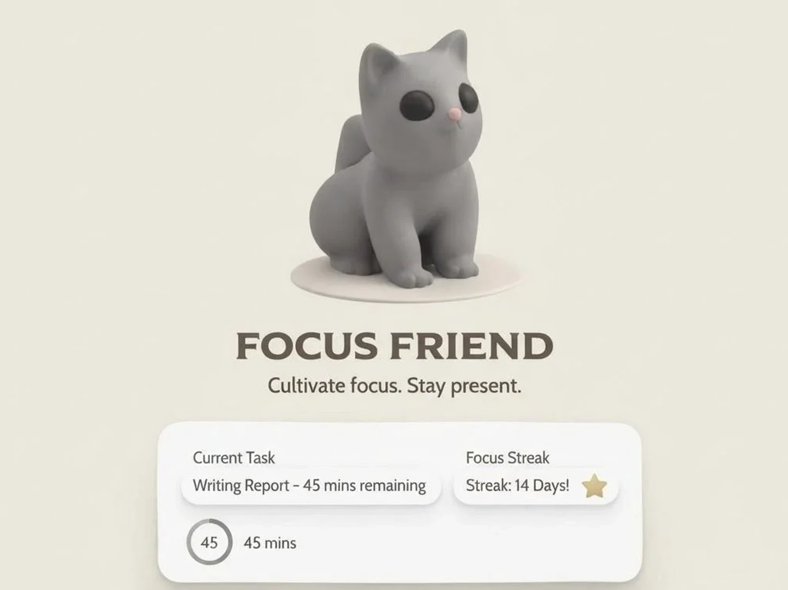

Owen O’Keefe
Master of Information (UX Design) at the University of Toronto, with a background in psychology and computer science.
Contents selected work, in order
p. 6
 Bright MapsOpen the case study
Bright MapsOpen the case study
Bright MapsOpen the case study
Bright Maps
Civic platform where residents vote on local services.
Open the case studyworkSelected work
Bright MapsOpen the case study
Bright MapsCase study
Civic platform where residents vote on local services.

Focus FriendOpen the case study Focus FriendCase study Gamified focus app using a pet's mood and time debt to curb phone distraction. Weather TowerLink ↗ Tower defense game with dynamic weather systems, built in Godot. MIDI GeneratorLink ↗ Generates music as MIDI using deep learning. Pitch Effect AnalyzerVST ↗ Real-time VST plugin (JUCE, C++) pairing a chorus effect with spectrograms and chord recognition. I worked on the TensorFlow chord recognition.Nothing matches that search.
01 / aboutAbout
Emerging UX designer pursuing a Master of Information in User Experience Design at the University of Toronto, with a background in psychology and computer science.
I enjoy usability testing, prototyping, and human-centered design, and I want to bring research-grounded design thinking to a UX or product design team.
02 / contactContact
Owen O’Keefebuilt in 2026